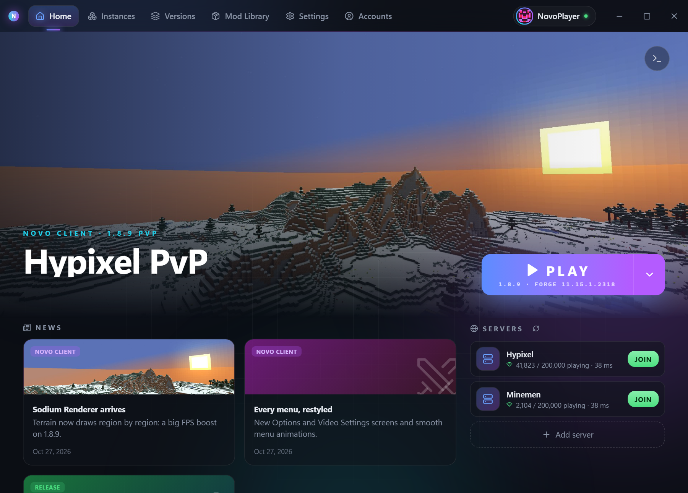
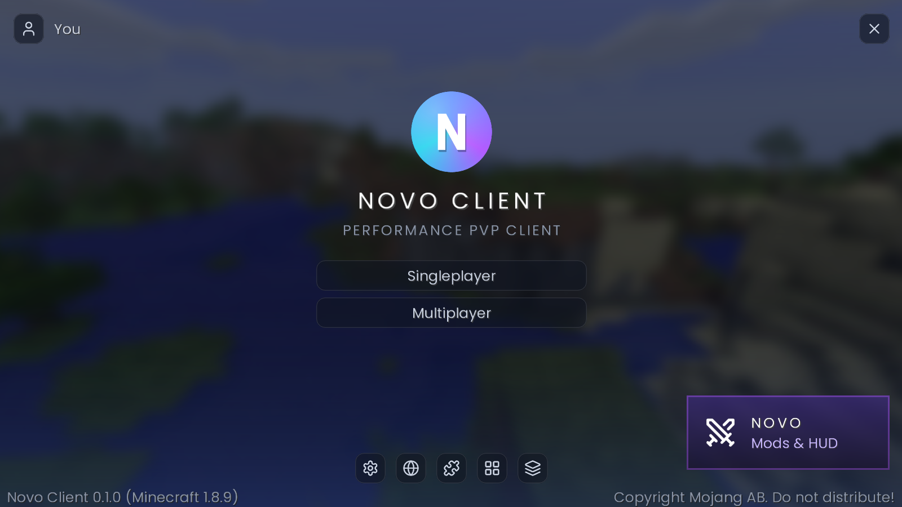
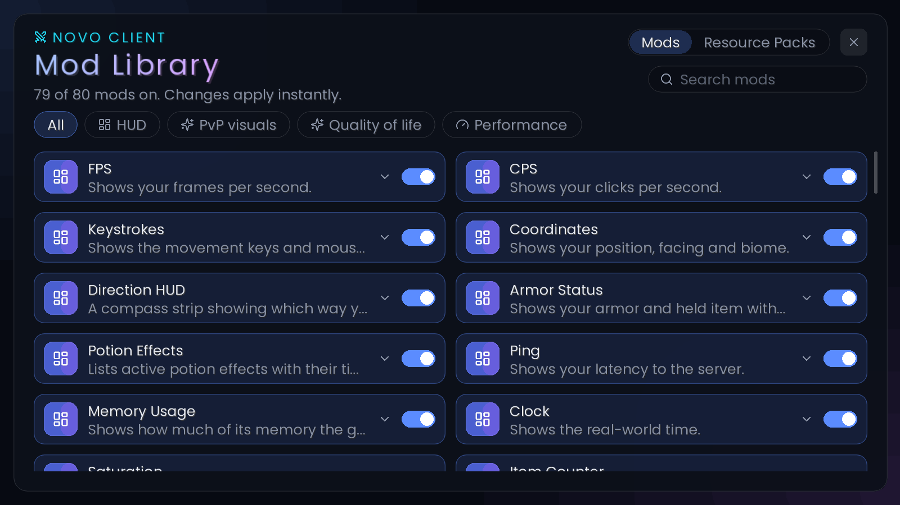
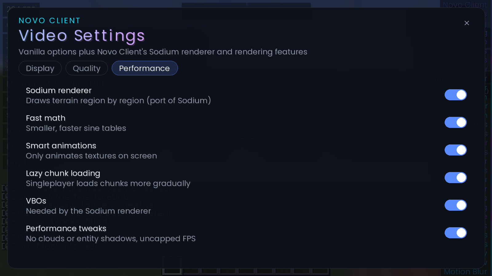
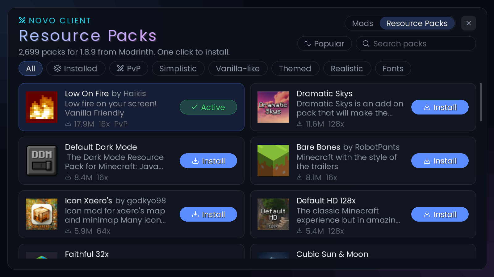

HUD
FPS, CPS, keystrokes, armour status, potion effects, coordinates, direction, ping, clock, memory, combo counter, reach, waypoints.
Version 0.4.5 · Windows 10 and 11
Sodium's chunk renderer ported to Forge, about eighty modules on one key, and a launcher that handles Java, Forge and your instances for you. Built by foreski.
The installer isn't code-signed yet, so SmartScreen will complain. More info → Run anyway.

The launcher
A Tauri app: a Windows desktop program with a web UI on top of Rust doing the actual work. One Play button, and everything around it is optional.
Each instance keeps its own worlds, mods, resource packs, memory and Java. Duplicate one when you want a copy.
Pulled from Mojang, verified file by file. Forge and a matching Java get downloaded for you.
Online servers and Realms. Tokens go in Windows Credential Manager, not a JSON file in %APPDATA%.
Pin servers to Home with live player counts and ping, then land straight in them from the launcher.
Roughly 2,700 Modrinth packs that work on 1.8.x, searchable and sortable, installed in one click.
Discord Rich Presence, a live console with crash reports, accent colours, signed self-updates, five languages.
In game
Right Shift opens both. Drag elements where you want them, scroll to resize, right-click to reset. Nothing overlaps by default — untouched elements settle into a left and a right column.
FPS, CPS, keystrokes, armour status, potion effects, coordinates, direction, ping, clock, memory, combo counter, reach, waypoints.
1.7 animations, hit colour, hurt cam, block outline, hitboxes, item physics, 2D items, motion blur, menu blur, dynamic lights.
Freelook, snaplook, zoom, toggle sprint and sneak, nick hider, custom scoreboard and tab list, chat timestamps, pack display, screenshot manager, Hypixel quickplay and requeue.
Sodium renderer, fast math, smart animations, lazy chunk loading, connected textures, custom sky, better grass and snow, entity and particle culling, uncapped frame rate.
Novo reads the scoreboard and your kit to work out whether you're in Sword, Pot PvP, UHC, Bed Wars, SkyWars or The Bridge, and keeps a separate setup for each: HUD layout, enabled modules, their settings and your keybinds. Change something mid-game and that mode remembers it.
Four drills in a private flat world, with personal bests: click speed, aim and combo (30 seconds against a strafing target), speedbridge (30 blocks over void) and pot refill.
Connected textures generate 47 glass border tiles from whatever pack you're using, plus
optifine/ctm and mcpatcher/ctm properties if the pack ships them. Custom sky reads
optifine/sky. Fast math is a 4096-entry sine table. All of it is a module, so any of it turns off.
An early-access build for 26.3 on Fabric shares the settings format and HUD layout, with mode profiles for Crystal, Mace, Spear, Nethpot, UHC, Axe and Sword, and drills for crystal speed, mace dive and spear charge.




Performance
Terrain is baked into shared region buffers and drawn a region at a time instead of a draw call per chunk. The repo ships a benchmark that builds a lobby-shaped stress scene — 400 armour stands, about 1,900 block entities, constant particles — and measures the same viewpoint three ways.
The entire HUD costs about 3.5%. Those numbers come from one machine on one scene, so read them as a before-and-after rather than a promise about your PC. Every optimisation is a module and can be switched off if you'd rather have vanilla.
Fair play
In the same category as the well-known ones. Nothing automates input and nothing reveals information the vanilla game hides.
The one thing worth knowing: freelook really detaches the camera, and unlike some clients there's no hook for a server to switch it off remotely, because Novo doesn't run a custom protocol on servers. So it's on you to check whether the server you're playing allows freelook — and the same goes for any HUD element a tournament ruleset bans.
Releases
Read from the newest releases when the page loads, so this list can't quietly fall behind. Updates install themselves once you're running Novo, so this is where to look when something moves.
FAQ
That's SmartScreen reacting to an installer nobody has paid Microsoft to sign yet, not a virus finding. Choose More info, then Run anyway. Once it's installed, every update is checked against Novo's own signing key before it's allowed to run.
No. Novo downloads a Java runtime that matches the version you're launching, and keeps it in its own folder, so it won't touch whatever Java you already have.
In %APPDATA%\NovoMC: instances, libraries, assets, runtimes and logs. One folder
for all instances, with worlds and mods per instance inside it. Settings → Data folder opens it.
Novo checks when it starts and offers the new build in Settings → Updates. Your instances, mods and settings stay where they are — it replaces the launcher, not your game.
Windows 10 or 11, 64-bit. There's no macOS or Linux build. Memory is per instance and you pick it in the launcher; 2 GB is enough for a vanilla instance, more if you're piling on mods.
Settings → Data folder shows which API host this build resolved and the config file behind it.
If that isn't https://novo-api.foreskin.dev, a stale novomc.config.json
is the likely cause. If it is, the bug report dialog sends the details and your logs straight to
the Novo Discord.
One button, one installer. Windows 10 or 11, 64-bit. Java is downloaded for you.